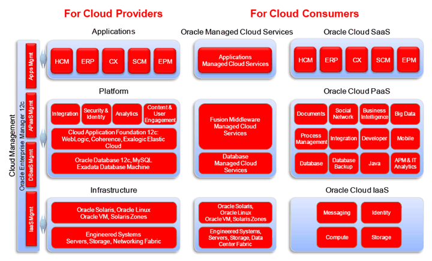
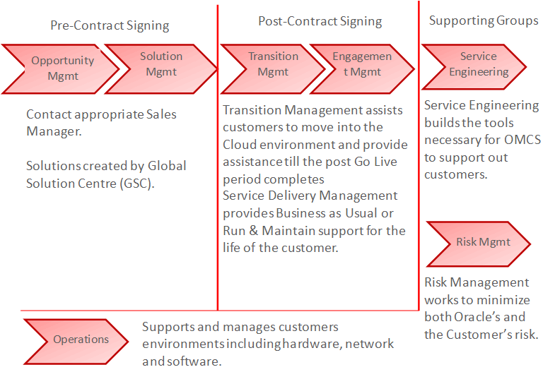

OUM |
Focus Area Overview |
||
Method Navigation |
Current Page Navigation |
||
|
|
||||||||
The Operate focus area spotlights how to manage and support software in production.
The Operate Focus area uses the Information Technology Infrastructure Library (ITIL) framework to define what Oracle does in each of the ITIL phases and processes. All parts of Oracle can now use the Operate focus area as a shared roadmap for the successful delivery of cloud services.
The primary areas covered in this framework include
Using this method focus area will enable customers to move into the Cloud environment smoothly and have this environment managed effectively and efficiently.
Review the OMCS Operate Focus areas to understand what Oracle Managed Cloud Services (OMCS) provides to customers and how to work effectively with OMCS. The meaning of Cloud services is quite different for many implementers and customers. The environment is managed and supported by OMCS, and therefore access to these environmental components is more structured to support security than some implementers are experienced.
Learning how to operate efficiently in this environment will maximize implementation success and customer satisfaction. Training links provide information on these implementation techniques and communication requirements.
OMCS operates and supports many Cloud offerings including Hybrid Cloud solution combinations (@Customer, @Oracle or a mix of both).

The OMCS service offering, includes:
A sample of the Extended Service Offerings includes:
Various groups within OMCS support the entire customer lifecycle from Opportunity Management through to ongoing Run & Maintain. The diagram below shows the different groups involved.

Like the Information Technology Infrastructure Library on which it is based, Operate is organized into following five volumes (herein represented as phases in the OUM structure):
Operate is comprised of the following twenty-five processes within the five volumes:
Service Strategy
Service Design
Service Transition
Service Operation
Continual Service Improvement

Copyright © 2006, 2016, Oracle and/or its affiliates. All rights reserved.